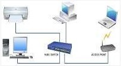
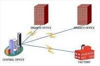
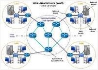

Hello Guys, Welcome to My Blog !

Hallo kawan, perkenalkan saya Asep Saepul Anwar mahasiswa S1 Sistem Informasi Universitas Nusa Mandiri.
Pada kesempatan ini saya akan berbagi artikel singkat, lebih tepatnya resume tentang jenis-jenis jaringan.
Selain untuk berbagi ilmu pengetahuan, konten ini juga bertujuan untuk memenuhi tugas mata kuliah Jaringan Komputer.
Selamat membaca kawan, semoga bermanfaat.
Menurut (Wongkar et al., 2015) Jenis-Jenis Jaringan Komputer diantaranya :
1. PAN (Personal Area Network)
PAN adalah singkatan dari personal area network. Jenis jaringan komputer PAN adalah hubungan antara dua atau lebih sistem komputer yang berjarak tidak terlalu jauh. Biasanya Jenis jaringan yang satu ini hanya berjarak 4 sampai 6 meter saja. PAN digunakan untuk komunikasi antara perangkat pribadi sendiri. Jenis jaringan ini sangat sering kita gunakan. Contohnya menghubungkan hp dengan komputer seperti pada gambar di atas.
Sedangkan dalam (Adani, 2020) dijelaskan bahwa Jenis jaringan ini mencakup wilayah yang lebih kecil, misalnya saja pada kantor, dan rumah. Biasanya, banyak digunakan hanya untuk keperluan internet, serta printer. Dan tidak memerlukan resources yang besar untuk menggunakan jaringan PAN.
2. LAN (Lokal Area Network)

Jaringan ini merupakan salah satu jaringan yang mengambil peran penting, seperti dapat di lihat pada gambar di atas.
LAN adalah singkatan dari local area network. Jenis jaringan LAN ini sangat sering kita temui di warnet-warnet, kampus, sekolah ataupun perkantoran yang membutuhkan hubungan atau koneksi antara dua komputer atau lebih dalam suatu ruangan. Jaringan LAN juga merupakan jaringan yang sangat di pengaruhi oleh topologi jaringannya.
Menurut (Adani, 2020), Jaringan LAN berfungsi untuk menghubungkan perangkat jaringan dalam kondisi jangkauan yang relatif kecil. Contoh penerapan jaringan LAN yaitu sistem jaringan pada sekolah, kantor, maupun rumah.
Banyak orang yang cenderung menggunakan konektivitas tertentu, terutama pada token ring dan ethernet. Selain itu, LAN juga menyediakan teknologi jaringan wireless dengan menggunakan WIfi dan lebih dikenal dengan WLAN (Wireless Local Area Network).
3. MAN (Metropolitan Area Network)

MAN singkatan dari metropolitan area network. Jenis jaringan komputer MAN ini adalah suatu jaringan komputer dalam suatu kota dengan transfer data berkecepatan tinggi yang menghubungkan suatu lokasi seperti sekolah, kampus, perkantoran dan pemerintahan.
Sebenarnya jaringan MAN ini adalah gabungan dari beberapa jaringan LAN. Jangkauan dari jaringan MAN ini bisa mencapai 10 - 50 kilo meter seperti pada gambar di atas
4. WAN (Wide Area Network)

WAN singkatan dari wide area network. WAN adalah jenis jaringan komputer yang mencakup area yang cukup besar. contohnya adalah jaringan yang menghubugkan suatu wilayah atau suatu negara dengan negara lainnya. Kita dapat melihat contoh WAN pada gambar diatas.
Dalam (Adani, 2020) dijelaskan, WAN merupakan kumpulan dari LAN yang tersebar secara geografis. Jaringan WAN cenderung untuk menggunakan teknologi seperti ATM, X.25, serta Frame Relay untuk konektivitas jarak yang lebih jauh lagi.
Adani, M. R. (2020). Ketahui Beberapa Hal Mengenai Jaringan Komputer dan Jenis Perangkatnya. Sekawan Media.
https://www.sekawanmedia.co.id/pengertian-jaringan-komputer/
Wongkar, S., Sinsuw, A., & Najoan, X. (2015). Analisa Implementasi Jaringan Internet Dengan Menggabungkan Jaringan Lan Dan Wlan Di Desa Kawangkoan Bawah Wilayah Amurang II. Jurnal Teknik Elektro Dan Komputer, 4(6), 62–68.